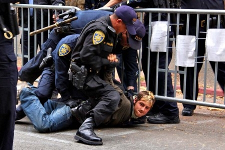

Présentation et historique
le Copwatching
COPWATCHING: surveillons ceux qui nous répriment
Servons nous de caméras vidéos, d'appareils Photos numérique pour nous protéger des violences policières.
COMME NOS AMIS DE LUTTES AMERICAINS, CREEONS PARTOUT DES COPWATCHS
Copwatching mais qu'est ce que c'est encore que ce truc , allez vous nous dire
Un peu d'histoire
A Cincinnati et à Los Angeles dans les années 90 les habitants des quartiers pauvres créèrent des Copwatch suite aux émeutes qui secouèrent ces deux villes, et aux répressions violentes qui s'en suivirent.
Les Copwatch c'est quoi? C'est très simple. Des gens se réunissaient et patrouillaient en groupe suivant la police au moindre contrôle au faciès violent. Ils filmaient la police et les violences que ceux-ci pouvaient commettre, avec des autocollants collés sur leur caméras, parodiant le "protect and serve" ou le "protéger et servir" qui est inscrit sur tout les badges et écussons des polices étasuniennes
Le Résultat ne se fit pas attendre. Partout ou des copwatch se sont crées, les violences policières baissèrent tout a coup de façon spectaculaire Ces comités existent toujours du reste, certains on disparus, mais des nouveaux se montent dans toutes les grandes villes américaines chaque jour.
The copwatch movement
Le Copwatch, pour la première fois, fut mis en place en février 1990 dans la partie sud de Berkeley, Californie, en réponse à la brutalité policière : cela dans la droite ligne des «copwatchers» les plus connus peut-être d'Amérique - le Black Panther Party basé sur Oakland et le mouvement pour la libération de la jeunesse de Berkeley.
Depuis 1990, d'autres projets de Copwatch ont commencé dans d'autres villes. Minneapolis fut le premier groupe à mettre en place sa propre version du Copwatch.
Actifs et visibles, des équipes de volontaires copwatch sont allés dans les rues pour faire ce qu'ils ont pu pour «protéger», contrôlant l'activité de la police avec des caméras vidéo, et en informant la population du coin sur leurs droits.
Un soir de 1997, un étudiant en criminologie d'OSU, Shammas Jones descendait High Street quand il vit la police anti-émeute alignée en travers de la 12e Avenue. Shammas avait une petite caméra vidéo. Il enregistra une partie des violences policières à distance puis se détourna et s'enfuit. Il fut attaqué par derrière par des agents qui le matraquèrent au visage, le jetèrent à terre, le cognèrent puis l'arrêtèrent. Ils prirent aussi la cassette de Jones et quand on la rendit finalement à son avocat la partie montrant le mauvais comportement de la police avait été effacée. Jones, qui est afro-américain, fut faussement accusé de trouble à l'ordre public et de résistance lors de l'arrestation.
Au tribunal il refusa une offre de la ville pour retirer toutes les plaintes en échange d'une promesse de ne pas aller en justice. Après un procès de plusieurs jours, il ne fallu au jury, presque entièrement blanc, que quelques minutes pour déclarer Shammas innocent. Chris Wisniewski et Walter Leake étaient aussi près de la 12e Avenue et de High Street ce soir là. Wisniewski a vu l'attaque contre Jones et s'arrêta pour en dénoncer la violence. Alors qu'il poursuivait sa marche il fut lui-même attaqué et matraqué. Après quelques heures resté menotté, les flics le laissèrent simplement partir. La même nuit Leake fut matraqué par un agent. Tous les trois ont porté plainte en civil contre la police.
Depuis qu'ils ont commencé leurs « patrouilles-vidéo » dans la rue, plusieurs copwatchers de Columbus ont été victimes des flics. Ces flics n'aiment vraiment pas être surveillés.
Le 13 octobre un membre de Copwatch a été arrêté alors qu'il filmait la police. La vidéo montre clairement qu'il obéissait aux ordres de la police. Le week-end suivant ce fut le congrès de ARA. Le samedi nous avons fait une marche contre la brutalité policière. Un nombre très important de flics de la police de Columbus - à pied, en voiture et même avec un hélicoptère - harcelèrent le groupe, arrêtèrent une personne pour avoir marcher sur la rue et matraquèrent plusieurs d'entre nous. Ensuite le 27 octobre, trois volontaires de Copwatch furent inquiétés. Josh Klein fut arrêté pour avoir pacifiquement filmé en vidéo des agents. Puis Anne Pussel fut embarquée pour s'être plainte de la violence de l'arrestation. Finalement Trisha Sikora fut stoppée, interrogée et verbalisée pour avoir suivi le fourgon de la police qui amenait Josh et Anne à la prison ! La plupart de ces accusations ont maintenant été rejetées et Copwatch demande à la ville de l'argent du fait des violations commises envers leurs droits.
Ces attaques ont de fait fortifié le copwatch et l'ont aidé à grossir. Des militants ont étendu le projet à d'autres endroits de Columbus en dehors des environs de l'Université. Peut-être bientôt des gens à travers toute la ville mettront en place des « patrouilles » copwatch par eux-mêmes. Si les flics ne font rien de mal pourquoi devraient-ils être gênés du fait d'être surveillés. N'est-ce pas ? Une brochure distribuée par le copwatch de Columbus inclut les déclarations suivantes : « Nous avons des caméras. Nous avons des avocats. Nous avons des personnes qui peuvent être vues, d'autres qui ne le sont pas. Nous surveillons les flics dès maintenant. »
Un membre a déclaré à Ara News : « nous nous développons dans beaucoup de directions - éducation, défense juridique, manifestation, surveillance. Nous ne serons pas censurés (des flics ont arraché des affichettes de Copwatch légalement placardées dans les environs de l'Université). Nous ne serons pas intimidés. Nous rendrons compte de la brutalité et des mauvais comportements de la police et nous tiendrons la police responsable de ses actions. »
Ara News Anti Racist Action }*

Interpellation par la police de Berkeley.
Principes ESSENTIELS du Copwaching:
Patrouiller a plusieurs par groupes affinitaires dans un quartier, jamais seul vous vous feriez immédiatement embarquer pour "outrages", être visible et en groupe, bien sur les flics n'aime pas ça, c'est sur mais aucune loi ne vous empêche de vous baladez en groupe avec des camera vidéos.
Toujours comme pour n'importe qu'elle action politique ou syndicale sortant du train train , des manifestations promenades , vous munir d'un numéro de téléphone d'un avocat , au besoin créer en parallèles de votre copwatch , des référents juridiques, ou faire votre balade de copwatching avec un avocat.
N'ayez bien sur jamais d'alcool (ou autres choses) sur vous lors de vos balades , pas la peine de donner des arguments aux forces de répression.
En cas d'interpellation, niez toujours si la police prétend que ce que vous faites est "illégal", et dire COLLECTIVEMENT que vous êtes un groupe en balade.
A vous de créer les vôtres maintenant.